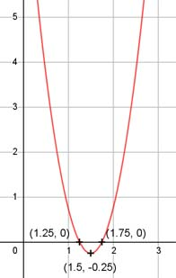

Aufgabe 5 f(x) = 4x2 - 12x + 8,75 f'(x) = 8x - 12, f''(x) = 8, f'''(x) = 0 Definitionsbereich: -∞ < x < ∞ Wertebereich: -0,25 ≤ f(x) < ∞ (siehe Extrempunkte) Asymptoten: - Symmetrie: - Nullstellen: 4x2 - 12x + 8,75 = 0 A, B, C - Formel: A = 4, B = -12, C = 8,75 x1,2 = x1,2 = x1,2 = 12 ± 2 x1,2 = -------- 8 x1 = 1,25 x2 = 1,75 N1(1,25|0), N2(1,75|0) Schnittpunkt mit der y-Achse: f(0) = 4 * 02 - 12 * 0 + 8,75 = 8,75 Sy(0|8,75) Extrempunkte: 8x - 12 = 0 | +12 8x = 12 | :8 x = 1,5, f(1,5) = 4 * 1,52 - 12 * 1,5 + 8,75 = -0,25 f''(x) = 8 > 0 --> Tiefpunkt (1,5|- 0,25) Alternativ: Scheitelpunktberechnung f(x) = 4x2 - 12x + 8,75 |:4 f(x) ----- = x2 - 3x + 2,1875 4 f(x) ------ = (x - 1,5)2 - 2,25 + 2,1875 |*4 4 f(x) = 4(x - 1,5)2 - 0,25 S(1,5|-0,25) Wendepunkte: 8 = 0 --> Widerspruch, keine Wendepunkte Graph:
